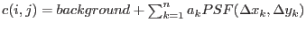
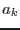
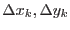
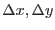

If the parameter psfphotometryenabled is set to true (default is false) then after the photometry of point-sources is performed (using an aperture) the photometry will be repeated using point-spread function fitting. Please note, that the implementation of this algorithm in the task is still under development, so that the source photmetry based on PSF-fitting might not be accurate enough; in the current task version the usage of this parameter is disabled. Sources that have a computed raw-count rate greater than the value specified through the parameter rawcountrate will be excluded from PSF-fitting, because a strong mod-8 pattern will make the fitting procedure unreliable.
In the case of FAST mode images, every source with a raw-count rate no greater than maxrawcountrate will have its photometry re-computed, but in the case of IMAGING mode data sources with no close neighbours will also be excluded.
The algorithm is a development of the psf-fitting algorithm introduced into the task omphotom several years ago and works as follows:
The counts for a source are obtained by solving the following set of equations for each pixel included in the fit by least-squares
 ,
where, the background is either the constant term in the least-squares fit or a fixed value, n the number of sources are included in the fit,  is the central height of the fitted PSF source k and  are the distances from the centre of source k to the image point (i, j) in the x and y directions, respectively. All pixels within a radius of 7 unbinned pixels from the centre of a source are included in the fit.
A discrete PSF function is used based on the PSF image obtained through the CAL routine
CAL_omGetPSFmap.
Interpolation is used to compute the value of the PSF at any , distance from the centre.
The total raw counts of a source k is then equal to the value of multiplied by the total counts in the PSF image within a radius of 12 unbinned pixel from it centre, which has been normalized to a central height of 1. The corrected count-rate is computed from this raw count-rate in an identical way to that for aperture photometry (no aperture correction is needed).
Since the width of the PSF is narrow, source centroiding errors can have a significant effect on the computed raw-count rates, and to reduce this error the algorithm ``fits'' the source coordinates by allowing the positions of all the sources to vary within strict bounds. For each set of trial positions, the least-squares fit is performed and the set of positions that gives the best least-squares fit are used- the source being fitted has its coordinates replaced with the best fit values. All sources (up to a maximum of 9) within a radius of 26 unbinned pixels, are included in the fit- each one is used in order of increasing distance from the central one.
The function that is minimized carries out the least-squares fit just discussed, using the current coordinates of each source, and the function value is the weighted sum of squares of the residuals. Obviously, the CPU time increases rapidly with the number of sources included in the fit. The minimization algorithm is based on that described in J, Canto, S. Curiel and E. Martinez-Gomez, 2009, Astonomy and Astrophysics, 501, 1259. "A simple algorithm for optmization and model fitting: AGA (asexual genetic algorithm)". Other minimization routines have been considered but this one is particularly simple and robust, not requiring derivatives to be calculated, allowing upper and lower bounds on the variables and not being fooled by local minima.
The algorithm is designed for robustness and since the minimization algorithm is relatively slow compared to more sophisticated but less reliable methods, performing psf photometry on a large source-list could take a considerable amount of time.
When a source has its photometry re-computed with psf photometry, some of the computed values such as the raw-count rate are compared to the aperture-photometry values.